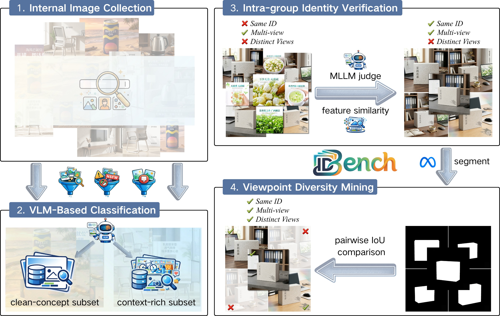
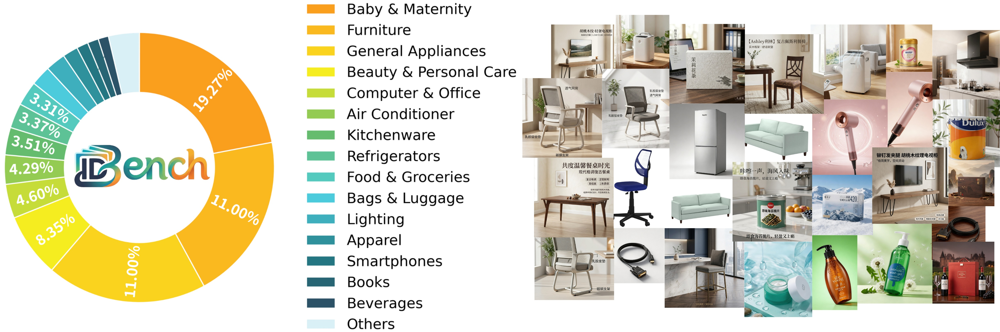
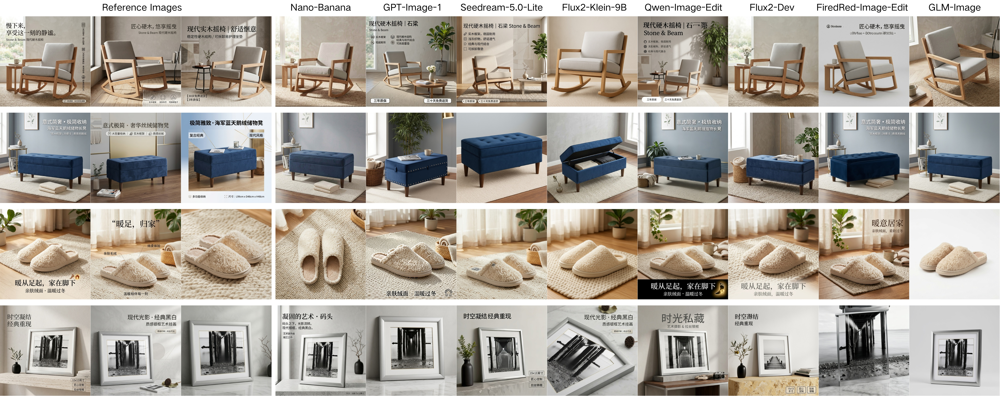

A large-scale benchmark of 50K product identities and ~200K images from real-world e-commerce advertising, enabling rigorous evaluation of multi-reference identity fidelity.


Distribution statistics of ID-Bench. The left panel shows the distribution of product categories, highlighting the diversity of the dataset, while the right panel presents randomly selected samples.
We benchmark 8 state-of-the-art models (3 closed-source, 5 open-source) across both evaluation tracks. Bold blue denotes the best result per column; light blue denotes the second best. ↑ higher is better; ↓ lower is better.
| Model | Type | ACN ↑ | FID ↓ | CLIP-IQA ↑ |
|---|---|---|---|---|
| Nano-Banana | Closed | 0.696 | 24.978 | 0.750 |
| GPT-Image-1 | Closed | 0.609 | 74.494 | 0.581 |
| Seedream-5.0-Lite | Closed | 0.641 | 23.350 | 0.689 |
| Flux2-Klein-9B | Open | 0.574 | 46.676 | 0.634 |
| Qwen-Image-Edit | Open | 0.583 | 34.168 | 0.629 |
| Flux2-Dev | Open | 0.682 | 18.683 | 0.696 |
| FireRed-Image-Edit | Open | 0.462 | 41.712 | 0.636 |
| GLM-Image | Open | 0.723 | 21.140 | 0.708 |
| Model | Type | TA ↑ | DA ↑ | MA ↑ | CLIP-IQA ↑ |
|---|---|---|---|---|---|
| Nano-Banana | Closed | 0.593 | 0.699 | 0.848 | 0.783 |
| GPT-Image-1 | Closed | 0.594 | 0.685 | 0.867 | 0.753 |
| Seedream-5.0-Lite | Closed | 0.676 | 0.782 | 0.864 | 0.738 |
| Flux2-Klein-9B | Open | 0.596 | 0.697 | 0.855 | 0.776 |
| Qwen-Image-Edit | Open | 0.588 | 0.694 | 0.848 | 0.782 |
| Flux2-Dev | Open | 0.597 | 0.705 | 0.846 | 0.746 |
| FireRed-Image-Edit | Open | 0.438 | 0.539 | 0.810 | 0.636 |
| GLM-Image | Open | 0.540 | 0.634 | 0.847 | 0.739 |
Results on the clean-concept subset of ID-Bench. Track A evaluates non-copy same-ID generation under unified prompting, while Track B evaluates target-guided generation under caption conditioning. Bold blue denotes the best; light blue denotes the second best.
| Model | Track A: Unified-Prompt | Track B: Caption-Guided | |||||
|---|---|---|---|---|---|---|---|
| ACN ↑ | FID ↓ | CLIP-IQA ↑ | TA ↑ | DA ↑ | MA ↑ | CLIP-IQA ↑ | |
| Closed-source Models | |||||||
| Nano-Banana | 0.730 | 20.297 | 0.766 | 0.655 | 0.751 | 0.872 | 0.790 |
| GPT-Image-1 | 0.674 | 40.149 | 0.681 | 0.626 | 0.725 | 0.864 | 0.781 |
| Seedream-5.0-Lite | 0.693 | 17.975 | 0.774 | 0.639 | 0.743 | 0.860 | 0.793 |
| Open-source Models | |||||||
| Flux2-Klein-9B | 0.589 | 38.039 | 0.673 | 0.588 | 0.698 | 0.843 | 0.759 |
| Qwen-Image-Edit | 0.712 | 34.620 | 0.689 | 0.617 | 0.734 | 0.841 | 0.751 |
| Flux2-Dev | 0.696 | 18.650 | 0.710 | 0.644 | 0.753 | 0.855 | 0.737 |
| FireRed-Image-Edit | 0.652 | 45.186 | 0.678 | 0.546 | 0.660 | 0.827 | 0.684 |
| GLM-Image | 0.718 | 17.785 | 0.744 | 0.635 | 0.740 | 0.858 | 0.780 |
Qualitative Comparison

Qualitative comparison of identity-preserving image generation results across closed-source and open-source models on representative product identities from ID-Bench.
If you find ID-Bench useful for your research, please consider citing our paper:
@inproceedings{idbench2027,
title = {ID-Bench: A Real-World Benchmark for Multi-Reference
Identity-Preserving Image Generation},
author = {Anonymous Author(s)},
booktitle = {ICASSP 2027},
year = {2027}
}